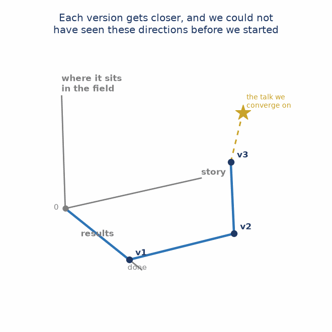
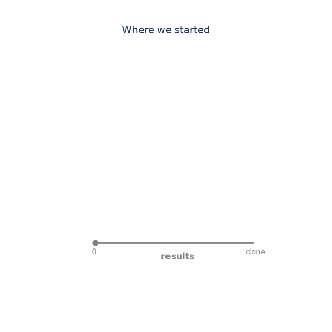

Today Marcio and Carol show their storyline slides, mostly the titles, and the rest of us help them find the story. Before we start, a picture of what revising a talk is like.


The first version of a talk usually pushes the results forward, because that is what we have been working on. Feedback on that version often shows a direction we were not looking at yet, such as the story that connects the results. The next round of feedback can show another one, such as where the work sits in the field and what the committee already believes. Each version gets closer to the talk you want to give.
None of us can see all of these directions before we start. When feedback sends you somewhere new, it does not mean the last version was wrong. It means the last version was good enough to show us the next direction.
Marcio and Carol bring their storyline slides. Don’t worry about the specifics yet. The titles carry the story, and today we only look at whether they do.
| Min | Block | What happens |
|---|---|---|
| 0–5 | Read | Everyone else reads the slides quietly, titles first. Note where the story jumps or where two titles say the same kind of thing. |
| 5–10 | Titles aloud | The presenter reads only the titles, in order, the way they want the committee to hear them. No explaining in between. |
| 10–25 | Questions and feedback | Questions first, then feedback. Start with what the story is, as you heard it, in one sentence. Then where you got lost. |
Order is Marcio, then Carol.